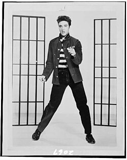
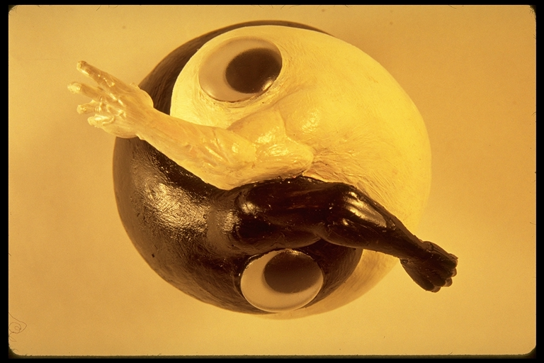

Literature
Ron English, Popaganda: The Art & Subversion of Ron English (San Francisco: Last Gasp, 2001), p. 130. ISBN 1-887128-60-3.

Ron English, Abject Expressionism: The Art of Ron English (San Francisco: Last Gasp, 2007), p. 111. ISBN 978-0867196894.

Notes
Reference sculpture created by Ron English and photographed as a model for this work.
This composition was later adapted by the artist as a limited-edition print in the Vinyl Chord: A Revolutionary Record Store series.
This composition was also reproduced as a poster.
Ancillary Documentation
The following materials document source imagery, model documentation, and later related reproductions connected to the work.



